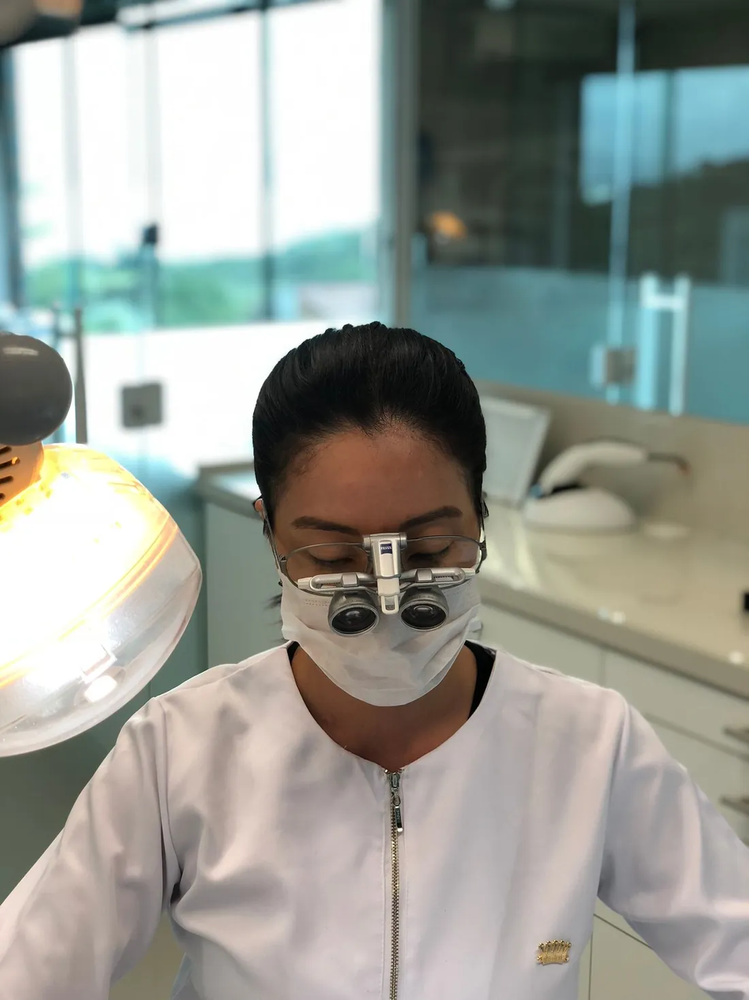

- Início
- Sobre
Dra. Anita Nogiri, dentista em Florianópolis
Cirurgiã-dentista há 26 anos, formada e especializada pela Universidade Federal do Paraná. Atende no João Paulo, em português e inglês, com o mesmo cuidado em cada etapa: ouvir, explicar e só então tratar.

10010
Precisão de especialista, calma de quem explica
Anita Nogiri Makowiecky é cirurgiã-dentista em Florianópolis (CRO-SC 10010), formada em Odontologia pela UFPR em 2000 e especialista em Dentística Restauradora pela UFPR desde 2009. Atende no bairro João Paulo, de segunda a sexta, em português e inglês.
A Dentística Restauradora é a especialidade que cuida da forma, da cor e da função dos dentes. É dela que vêm as restaurações estéticas, as facetas de resina e de porcelana, as lentes de contato dental e o clareamento, os tratamentos mais procurados no consultório.
Nas avaliações, os pacientes repetem as mesmas palavras: paciência, explicação e cuidado. Muitos chegam com medo de dentista e ficam: há pacientes que se tratam com a Dra. Anita há 12 e até 20 anos, e famílias inteiras atendidas por ela.
Uma trajetória construída na UFPR
Formação, especialização e mais de duas décadas de consultório, sempre com foco em estética natural.
- 2000
Graduação em Odontologia
Formada pela Universidade Federal do Paraná, em Curitiba.
- 2009
Especialização em Dentística Restauradora
Também pela UFPR. O trabalho de conclusão foi sobre a reabilitação estética de um sorriso com resina e facetas de porcelana.
- 2011
Trabalho publicado
O estudo da especialização ganhou relevância e foi publicado na Revista Clínica.
- Hoje
26 anos de odontologia
Consultório próprio no João Paulo, em Florianópolis, com 232 avaliações 5 estrelas no Doctoralia e nota 4,9 no Google.
O que é odontologia integrada
É olhar para o sorriso inteiro antes de tratar um dente. Gengiva, mordida, função e estética entram no mesmo plano, para que o resultado seja bonito e dure.
Ouvir antes de tratar
A primeira consulta é uma conversa. Você conta o que incomoda e o que deseja, sem pressa e sem julgamento.
Planejar o sorriso inteiro
Exame completo, fotos e um plano por escrito, com as etapas, as alternativas e o tempo de cada uma.
Executar com precisão
Atendimento com lupas de aumento, materiais atuais e cada passo explicado antes de acontecer.
Pacientes que ficam por anos
Trechos de avaliações publicadas pelos próprios pacientes, sem edição.
Eu sempre tive problemas pra ir ao dentista, as experiências anteriores nao tinham sido muito boas mas com a Dra Anita tudo foi diferente, muito paciente, explicando cada processo e etapa me senti super bem e agora ela se tornou minha dentista
Dra. Anita cuida de quase todos da família e cada um de nós tem um agradecimento especial a lhe dar. Recomendamos fortemente a profissional impecável que ela é e aproveitamos esse espaço para ajudar você a fazer a escolha certa!
Muito atenciosa! Sou paciente a mais de 7 anos ! Moro longe do consultório mas amo o atendimento dela ! Local agradável e de fácil acesso!
5,0 com 232 avaliações no Doctoralia · 4,9 com 36 avaliações no Google
Ver mais avaliações
Um consultório particular no João Paulo
O consultório fica na Rodovia João Paulo, 695, sala 203, com recepção tranquila e horário marcado com pontualidade. O atendimento é particular, sem convênios, e cada tratamento começa com um plano detalhado para você decidir com calma.
- HorárioSegunda a sexta, das 9h às 19h
- IdiomasPortuguês e inglês
- PagamentoPIX, cartões de crédito e débito, transferência e dinheiro
Perguntas sobre a Dra. Anita
Quem é a Dra. Anita Nogiri?
Anita Nogiri Makowiecky é cirurgiã-dentista em Florianópolis, inscrita no CRO-SC sob o número 10010. Formou-se em Odontologia pela Universidade Federal do Paraná em 2000 e é especialista em Dentística Restauradora pela mesma universidade desde 2009.
Onde fica o consultório?
Na Rodovia João Paulo, 695, sala 203, bairro João Paulo, Florianópolis/SC, CEP 88030-300. O atendimento é de segunda a sexta, das 9h às 19h.
A Dra. Anita atende em inglês?
Sim. O atendimento é feito em português e em inglês.
O que faz um especialista em Dentística Restauradora?
Cuida da forma, da cor e da função dos dentes: restaurações estéticas, facetas de resina e de porcelana, lentes de contato dental e clareamento.
Vamos nos conhecer?
Agende uma avaliação. Você sai da primeira consulta sabendo exatamente o que precisa e quais são os caminhos possíveis.